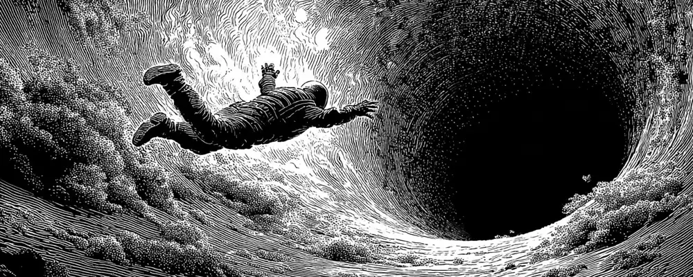
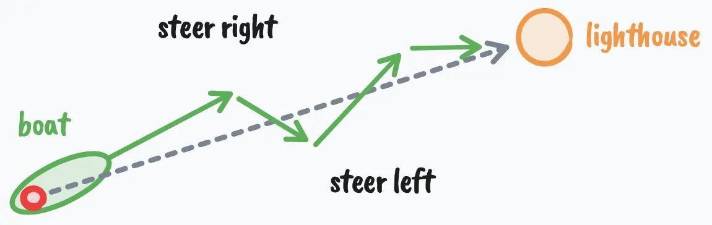

互动数据（2026-10-27 13:00 UTC+8，经 X API 读取）：约 2.5 亿次浏览、36.6 万赞、5.9 万转帖、9,416 回复、约 96 万收藏。
全文翻译
如果你和我差不多，你会觉得新年决心很蠢。
因为大多数人改变人生的方式完全错了。他们立新年决心，是因为别人都在立——我们从地位游戏里制造出一种肤浅的意义——但这些决心达不到真正改变的要求，真正的改变远比说服自己“今年会更自律、更高效”要深得多。
如果你就是这样的人，我不是来贬低你的（我写东西往往有点狠）。我放弃的目标比实现的多十倍。我觉得大多数人本该如此。但一个事实依然成立：人们试图改变人生，几乎每一次都彻底失败。
不过，尽管我觉得新年决心很蠢，反思一下你所厌恶的生活总是明智的，这样你才能把自己发射向好得多的东西——这正是我们要讨论的。
所以，无论你是想创业、改造身材，还是想冒险奔向更有意义的生活而不在两周后放弃，我都想分享 7 个你大概没听过的、关于行为改变、心理学和生产力的观点，让你在 2026 年做到这一点。
这会很全面。
这不是那种读完就忘的信。
这是你会想收藏、做笔记、专门留出时间思考的东西。
结尾的协议（深挖你的心理、找出你真正想要的人生）大约需要整整一天完成，而效果会持续得远比一天久。
我们开始吧。
一、你没到想去的地方，是因为你还不是那个会在那里的人
说到设定大目标，人们往往只关注成功两个条件中的一个：
- 改变你的行动，朝目标推进（最不重要，二阶）
- 改变你是谁，让行为自然随之而来（最重要，一阶）
大多数人设定一个表层目标，给自己打鸡血，在头几周保持自律，然后没怎么挣扎就回到老样子——因为他们想在一块正在腐烂的地基上盖一座美好的人生。
如果这听着不太明白，我们举个例子。
想一个成功的人。可以是身材极好的健美运动员，可以是身家数亿的创始人/CEO，也可以是一个能和一群人聊开、脑子里一丝焦虑都没有的有魅力的家伙。
你觉得健美运动员需要“咬牙硬撑”才能吃得健康吗？CEO 需要逼自己才能出现、带领团队吗？在你看来表面上也许如此，但真相是他们想象不出自己用别的方式生活。健美运动员要“硬撑”才能吃得不健康。CEO 要强迫自己才能在闹钟响后继续躺在床上，而且每一秒都讨厌（这里有细微差别，先陪我想一秒）。
在一些人看来，我自己的生活方式显得有点极端、有点自律。对我来说它是自然的，我这么说也不是为了跟其他任何生活方式对比。我只是享受这样活着。当我妈说我应该休息一下、出去玩玩……我忍住没告诉她：“如果我不觉得好玩，我为什么要做我在做的事？”
下面这句话听着可能很简单，但有多少人不懂它，令人费解。
如果你想要人生中的某个结果，你必须在达到它之前很久，就过着能产生那个结果的生活方式。
如果有人说他想减 30 磅，我常常不信。不是因为我觉得他做不到，而是因为太多次，同一个人会说：“我等不及减完肥，好重新开始享受生活了。”我不想打击你，但如果你不把那种让你减下体重的生活方式终生采纳下来，并且找到一个引力比“把你拴在旧方式上的那个理由”更大的理由，你就会径直回到起点，然后不开心地说：你浪费了那个永远拿不回来的资源——时间。
当你真正改变了自己，所有不能推动你接近目标的习惯都会变得令人恶心，因为你深刻地意识到那些行为会复利成怎样的人生。你之所以对目前的标准感到可以接受，是因为你没完全意识到它们是什么、会导向哪里。我们会讨论怎么把这一点挖出来，但需要先铺垫。
你说你想改变。你说你想“财务自由”“变健康”，但你的行动显示的却不是这样，而这是有原因的。它比你想的深得多。
二、你没到想去的地方，是因为你并不想在那里
只信任行动。生活发生在事件层面，而非言语层面。信任行动。
——阿尔弗雷德·阿德勒
如果你想改变自己是谁，就必须理解心智如何运作，才能开始重新编程它。
理解心智的第一步，是理解所有行为都是目标导向的。它是目的论的。仔细想想这挺显而易见，但当我们深挖下去，大多数人并不想听。
你迈出一步，是因为你想到达某个位置。
你挠鼻子，是因为你想让痒消失。
这些很清楚，但大多数时候你的目标是无意识的。举个简单例子：你可能没意识到，当你在大白天坐在沙发上时，你是在努力消磨掉下一个责任到来之前的时间。
在更无意识、更复杂的层面上，你会追求会伤害你的目标，但你会用一种社会可接受、不让你显得像个失败者的方式为自己的行为辩护。
比如，如果你停不下拖延工作，你可能会用“我缺乏自律”来解释，但实际上你像往常一样在试图达成一个目标。在这里，那个目标可能是保护自己免受完成并分享作品之后随之而来的评判。
如果你说你想辞掉没前途的工作，却没有任何真正的理由就一直待着，你可能开始觉得自己勇气不够，或者自己从来不是“敢冒险的人”，但真相是你在追求安全、可预测，以及一个借口——不让你在生活中那些把“做一份没前途的工作”视为成功标志的人眼里显得像个失败者。
这里的教训是：真正的改变需要改变你的目标。
我不是指设定某个表层目标——因为“设目标”这个行为本身，可能正服务于一个实际上在伤害你的无意识目标。生产力圈子已经把这个讲烂了。我指的是改变你的视角。因为目标就是这个：目标是一种对未来的投射，它像一副感知的镜片，让你注意到有助于实现该目标的信息、想法和资源。
现在再深挖一点，因为如果你不理解这一点，走出来只会更难。
（原文此处插入：我每周发 1–2 封这样的信。如果不想错过，在这里加入。你也可以免费读我的书、其他信件等。→ letters.thedankoe.com）
三、你没到想去的地方，是因为你害怕在那里
你要记住的重要一点是：你是怎么得到这个想法的、它从哪来，一点也不重要。你可能从没见过职业催眠师，可能从没被正式催眠过。但如果你接受了某个想法——来自你自己、你的老师、父母、朋友、广告或任何其他来源——而且你坚信这个想法是真的，那么它对你的支配力，就和催眠师的话对被催眠者的支配力一样大。
——麦克斯威尔·马尔茨
这就是你如何成为今天的你，以及你将如何成为明天的你。这是身份的解剖：
- 你想达成一个目标
- 你透过这个目标的镜片感知现实
- 你只注意到能帮你达成目标的“重要”信息和想法（学习）
- 你朝目标行动，并得到你在接近它的反馈
- 你重复这个行为，直到它变得自动、无意识（条件化）
- 这个行为成为你认为的“你是谁”的一部分（“我是那种……的人”）
- 你为了维持心理一致性而捍卫你的身份
- 你的身份塑造新的目标，循环重新开始；如果这个身份不利于好的人生，事情会很快变糟
不幸的现实是，你必须在第 6 步和第 7 步之间打破这个循环，但这个过程从你还是孩子时就开始了。
你有生存的目标。
你依赖父母教你如何生存。你不得不服从。而由于大多数人的教法是奖励和惩罚，除非你采纳他们的信念和价值观，否则你会受罚。直到你看穿这一点之前，你其实并没有在独立思考。
但你的父母一生也经历了这个过程。这就是可能变危险的地方。除非他们自己打破了这个模式，你的父母是被工业时代文化所认可的成功观念条件化的。他们也携带着来自他们的父母、以及父母的父母最好和最坏的条件化。
再往深一层：一旦你满足了身体的生存需求（在今天的世界这很容易，你几乎生来就是安全的），你就开始在概念或意识形态层面上求生存。你也许不会去保护和繁衍你的身体，但你绝对会保护和繁衍你的心智。不难看到互联网上的观念战争，而参战者就是个体和群体的身份。
当你的身体感到威胁，你会进入战斗或逃跑。
当你的身份感到威胁，同样的事情会发生。
如果你高度认同某种政治意识形态（通过我们刚才讲的过程），当有人挑战你的信念时，你会感到受威胁。你真的会感到压力。情绪上，你感觉像刚被人扇了一耳光。由于大多数人不会去分析自己情绪里的真相，你往往会困在回音室里，在伤害自己和他人的主张上加倍下注。
如果你在宗教家庭长大而没有独立思考，你会与威胁到你在那个小泡泡里的心理安全的人争斗、攻击他们。
当你无意识地把自己看作律师、游戏玩家，或者其他某种不会去采取行动实现更好人生的人时，同样的事也会发生。
四、你想要的人生，存在于某个特定的心智层级
心智会随着时间经过可预测的阶段而演化。
你出生时，就像一块小小的生存海绵，吸收你能吸收的任何信念（这些信念很大程度上由你的文化决定），以便感到安全和有保障。而如果你不小心，你的心智可能会结晶化，这可能让你难以过上有意义的生活。
这在马斯洛需求层次、Greuter（应为 Cook-Greuter）的自我发展阶段、螺旋动力学和整合理论等模型里已有足够多的记录，它们彼此递进，但在社会中观察到这一点也不难。
这些我讲过很多次，并把它们综合成了我自己的 Human 3.0 模型，配有多个 AI 提示词来找出你的发展层级和前进路径（如果愿意，可以在新标签页打开、读完再看），但这里先用 80/20 的方式回顾一下自我发展的 9 个阶段（因为重复有助于发现你之前没注意到的东西，而且有新读者在读这些信）：
（原文此处插入一张第三方制作的 AQAL 整合地图图表——“AQAL – An Integral Map”，图上标注 © 2007 formlessmountain.com，叠合了螺旋动力学、自我发展阶段、意识状态与发展线。因版权属第三方，本站未转载。）
- 冲动期（Impulsive）——冲动和行动之间没有分隔。非黑即白的思维。例：幼儿生气就打人，因为感受和行为是同一回事。
- 自我保护期（Self-Protective）——世界是危险的，你学会照顾自己。例：小孩学会藏成绩单、在家务上撒谎、琢磨大人想听什么。
- 从众期（Conformist）——你就是你的群体，它的规则感觉就像现实本身。例：一个真心无法理解为什么有人会和自己家人或群体投不一样票的人。
- 自我觉察期（Self-Aware）——你注意到自己有一个与外在不符的内在生活。例：坐在教堂里，意识到你不确定自己是否相信周围所有人似乎都相信的东西，但还不知道该拿这种感觉怎么办。
- 尽责期（Conscientious）——你建立自己的原则体系，并对自己负责。例：在仔细研究后离开家族的宗教，采纳一种你能为之辩护的个人哲学；或者制定一个里程碑清晰的职业规划，因为你相信正确的努力会带来正确的结果。
- 个人主义期（Individualist）——你看到你的原则是被情境塑造的，开始更松地持有它们。例：意识到你的政治观点更多与你在哪长大有关，而非客观真理；或者注意到你那野心勃勃的职业目标其实是为了赢得父亲的认可。
- 战略家期（Strategist）——你在系统中工作，同时意识到自己也身处其中。例：领导一个组织，同时主动质疑自己的盲点；或者参与政治，同时知道自己的视角是局部的，受到你无法完全看见的偏见塑造。
- 建构觉察期（Construct-Aware）——你把所有框架，包括你的身份，都视为有用的虚构。例：以隐喻而非字面的方式持有你的灵性信仰，知道地图不是疆域；或者带着一种温和的好笑，看着自己扮演“创始人”或“思想领袖”的角色。
- 合一期（Unitive）——自我与生活之间的分隔消融。例：工作、休息和玩耍感觉是同一件事。不再有一个需要成为什么的人，只有对当下所发生之事做出回应的临在。
对于大多数读这篇文章的人，我猜你在第 4 到第 8 阶段之间徘徊，这是一个巨大的跨度。更接近 8 的人读这篇，要么是为了学点东西，要么是用一种无害的方式打发时间。更接近 4 的人是真的在寻找改变。你觉得自己注定不止于此，但还没能把一切理清，因为显然涉及很多因素。
好消息是，你处在哪个阶段并不太重要，因为穿越其中任何一个阶段都遵循同一个模式。
五、智力，就是从人生中得到你想要之物的能力
智力唯一真正的检验，是你是否从人生中得到了你想要的。
——纳瓦尔·拉维坎特
成功有一个公式。
一个成分是能动性（agency）。
一个成分是机会（很多人喜欢把它误认为“特权”——因为他们［缺少］其他成分）。
最后一个成分是智力。
如果你能动性高但机会少，那你多么可能朝目标行动都没关系，因为这不是一个会结出多少果实的目标。
如果你有机会和能动性但智力低，那你永远无法充分从机会中获益。
首先，能动性我们之前在这里讨论过。至于机会，我没法叫你换个物理位置，但如果你看不到就在你眼前的大量数字机会，我也不知道该跟你说什么。
话虽如此，我想聚焦在：在这另外两个成分和这封信的语境下，智力是什么。为此，我们看向控制论（cybernetics）。
控制论来自希腊词 kybernetikos，意思是“掌舵”或“善于掌舵”。
它也被称为“得到你想要之物的艺术”。
所以，如果纳瓦尔对智力的定义是从人生中得到你想要的，那么理解控制论能帮你快得多地做到这一点。
控制论阐明了智能系统的属性：
- 拥有一个目标。
- 朝目标行动。
- 感知你在哪。
- 与目标比较。
- 基于反馈再次行动。

你可以根据系统迭代、并坚持试错的能力来判断它的智力。
一艘被吹离航线、又朝目的地修正的船。一个感知到温度变化而启动的恒温器。血糖飙升后分泌胰岛素的胰腺。
这和从人生中得到你想要的有什么关系？
全部关系。
行动、感知、比较，并从元视角理解整个系统，是高智力（按我们这里用的定义）的根本。
高智力是迭代、坚持、理解全局的能力。低智力的标志是无法从错误中学习。
低智力的人卡在问题上，而不是解决它们。他们撞上路障就放弃。就像一个没能积累起读者的作者，因为缺乏尝试新东西、做实验、找出适合自己的流程的能力而放弃（认为你无法创造出一个有效的流程，无论你有什么限制性信念，这都可验证地是错的，因此是低智力）。
高智力是意识到任何问题在足够长的时间尺度上都能解决。现实是，你能实现任何你下定决心要实现的目标。
智力是意识到存在一系列你可以做出的选择，会导向你想要的目标。你明白想法是层级式的，你不可能一步从莎草纸跳到 Google Docs。即便那个目标现在不可能，你只是还没有实现它的资源——而这些资源可能在接下来几年被发明出来。
当我谈“目标”时——我也会继续重复——我说的不是典型的自助视角，尽管那有时也是个有用的视角。
我说的是目的论的视角，或者希腊人的 kosmos——万物都有其目的。万物都是一个更大整体的一部分。
目标决定你如何看世界。
目标决定你把什么视为“成功”或“失败”。
你可以试着“享受过程”，但如果你追求错误的目标，你不会享受它。
你的心智是现实的操作系统。
这个系统由目标组成。
对大多数人来说，这些目标是被分配给他们的。像代码一样被编进你的心灵。
上学。找工作。被冒犯。扮演受害者。65 岁退休。
一条已知的、行不通的路。
要变得更聪明，你必须：
- 拒绝已知的路
- 潜入未知
- 设定新的、更高的目标来扩展你的心智
- 拥抱混乱，允许成长
- 研究自然的普遍原理
- 成为一个深度通才
我明白这可能不是智力的传统定义，但这一系列步骤会让你的大脑产生非同寻常数量的连接，导向我们会观察为“聪明人”的样子。再配上能动性，你就赢了。
这正好把我们带进下一节。
六、如何（在一天内）发射进一种全新的人生
我人生中最好的时期，总是出现在我对自己缺乏进展彻底受够了之后。
你如何深挖自己的心智？
你如何意识到自己的条件化？
你如何获得改变人生轨迹的深刻洞见和真相？
通过简单、但常常痛苦的提问行为。
很少有人这样做，你从他们说话的方式、或对某个话题发表看法的方式就能看出来。提问就是思考，而很少有人思考。
我想给你一个全面的协议，你每年都可以用它来重置人生，发射进一个高强度进步的季节。这个协议帮你问对问题。
这些问题从宏观覆盖到微观：你想去哪、需要做什么才能到那、以及你可以立刻做什么来开始朝那个现实推进。
这需要完整的一天，所以我建议你严格照着协议来。你需要一支笔、一张纸，和一颗开放的心。
当我观察那些成功翻转身份的人的模式时，我发现在张力积累之后，翻转发生得很快。具体来说，我注意到人们往往会经历 3 个阶段：
- 失调（Dissonance）——他们感觉自己不属于目前的生活，对缺乏进展已经受够了。
- 不确定（Uncertainty）——他们不知道接下来是什么，于是要么去实验，要么迷失、感觉更糟。
- 发现（Discovery）——他们发现自己想追求什么，在 6 个月里取得 6 年的进展。
所以，这个协议的目标是帮你到达失调点，穿过不确定，发现你真正想实现的是什么——清晰到让人难以招架，干扰再也没有分量。
这个协议的结构让你一天就能完成。早上，你做一次心理挖掘，找出自己隐藏的动机。白天，你用“打断”来提示自己，让自己脱离自动驾驶、审视人生。晚上，你把洞见综合成一个明天就开始前进的方向。
我无法保证这对每个人都有效，因为我无法保证每个读者都正处在自己故事中能让这些观点产生影响的那一章。你不能把高潮放在书的开头，还指望它有趣。
第 1 部分）早晨——心理挖掘——愿景与反愿景
首先，我们必须为你的心智创造一个新的框架，或者说新的感知镜片。
这就像造一个新壳，离开旧壳，随时间慢慢长进去。一开始它不会合身。这是好事。
留出 15–30 分钟（一个 YouTube 视频的长度……你做得到）来思考并回答这些问题。不要试图把这种沉思外包给 AI。我希望你突破心智上的那个限速器。如果不能立刻回答，之后再回来。
- 你学会与之共存的那种隐隐的、持续的不满是什么？不是深重的痛苦，而是你学会了忍受的东西。（如果你不恨它，你就会忍受它）
- 你反复抱怨却从未真正改变的是什么？写下过去一年你最常说的三条抱怨。
- 对每一条抱怨：一个观察你的行为（而非你的话）的人，会断定你真正想要的是什么？
- 关于你目前生活的哪个真相，若要向一个你深深尊敬的人承认，会让你无法承受？
这些问题是为了让你意识到当前生活中的痛苦。现在，我们需要把它们变成我所说的“反愿景”，也就是对你不想过的人生的一种残酷觉察。这样你就能用这股负能量把努力瞄向正面的方向，并从内在动机出发行动。
- 如果接下来五年什么都不变，描述一个普通的星期二。你在哪醒来？身体感觉如何？你想到的第一件事是什么？身边是谁？早 9 点到晚 6 点你在做什么？晚上 10 点你感觉如何？
- 现在把时间换成十年再做一遍。你错过了什么？哪些机会关闭了？谁放弃了你？你不在场时，人们怎么说你？
- 你到了生命尽头。你过了安全的版本。你从未打破模式。代价是什么？你从未允许自己去感受、去尝试、去成为什么？
- 你生活中谁已经活在你刚描述的那种未来里？某个在同一条轨迹上领先你五年、十年、二十年的人？想到要变成他们，你有什么感受？
- 要真正改变，你必须放弃哪个身份？（“我是那种……的人”）不再做那个人，在社交上会让你付出什么代价？
- 你还没改变的最丢人的理由是什么？那个让你听起来软弱、害怕或懒惰，而不是合情合理的理由？
- 如果你目前的行为是一种自我保护，你到底在保护什么？这种保护让你付出了什么代价？
如果你如实回答了这些问题，而且你正处在人生中合适的那一章，你会对现在的生活方式感到一种深深的不安，甚至可能是厌恶。现在，我们需要把这股能量导向正面的方向。我们需要创造一个最小可行愿景，因为你的愿景就像一个产品。它一开始不清晰，但随着时间和经验，会变得更强、更有力。
- 先忘掉现实可行性。如果你打个响指就能在三年后过上不同的生活——不是现实的，而是你真正想要的——一个普通的星期二是什么样？细节程度和第 5 题一样。
- 你必须相信自己是怎样的人，那种生活才会感觉自然而非勉强？写出身份声明：“我是那种……的人”
- 如果你已经是那个人，这周你会做的一件事是什么？
明天一早，第一件事就是回答所有这些问题。
第 2 部分）白天——打断自动驾驶——打破无意识模式
这些写日记的练习挺可爱，但我们要的是真正的改变。
坦白说，如果你不打破让你保持原样的现有无意识模式，改变就不会发生。
一整天里，我希望你沉思你在第 1 部分写下的一切。除此之外，我不希望你忘记沉思。请认真对待。你不会靠余生都做同样的事来改变。你需要有意识地强制打破模式。
现在就花时间在手机里设好提醒或日历事件。把问题写进提醒或事件里，这样你能立刻开始思考。
时间越随机、越不和你的日程冲突越好。
- 上午 11:00：我现在做的事，是在逃避什么？
- 下午 1:30：如果有人拍下了过去两小时，他们会断定我想从人生中得到什么？
- 下午 3:15：我是在走向我讨厌的人生，还是我想要的人生？
- 下午 5:00：我在假装不重要的最重要的事是什么？
- 晚上 7:30：我今天做的哪些事是出于身份保护，而非真正的渴望？（提示：你做的大多数事都是）
- 晚上 9:00：今天什么时候我感觉最有活力？什么时候感觉最像死了？
为了再添把火，把下面这些问题安排在你通勤、散步或躺着的时候：
- 如果我不再需要别人把我看作［你在第 10 题写下的身份］，会有什么改变？
- 我生活中哪些地方在用活力换安全？
- 我想成为的那个人，最小的版本是什么——明天就可以成为的那种？
（译注：原文此处写“第 10 题”，按上文编号，身份声明分别出现在第 9 题（要放弃的旧身份）和第 13 题（新身份声明）；第 10 题是“最丢人的理由”，疑为作者笔误。）
第 3 部分）晚上——综合洞见——进入一个进步的季节
如果你跟着这个过程走完，要是你没有至少一个可能改变人生方向的深刻洞见，我会很惊讶。现在，我们需要把它们明确下来，融入我们是谁，并据此行动，开始巩固通往新心智层级的旅程。
- 今天过后，关于你为什么一直卡住，什么感觉最真实？
- 真正的敌人是什么？清楚地叫出它的名字。不是环境，不是别人。是一直在主导一切的那个内在模式或信念。
- 写一句话，概括你拒绝让你的人生变成什么。这是压缩后的反愿景。读到它时应该让你有所触动。
- 写一句话，概括你正在朝什么构建——明知它会演化。这是你的愿景 MVP。
最后，我们需要创建目标。
再说一遍，这些不是为了成就而设的目标，因为目标只是投射。它们不可靠，会让你觉得被绑在某个必然会变的东西上。相反，把目标当作一种视角。一副你可以替换的镜片，让你进入正确的心态去执行那些会带你远离你不想要的人生的行动。不要担心什么终点线，因为我们会发现，它并不存在。乐趣在于进步。
- 一年镜头：一年后什么必须为真，你才知道自己打破了旧模式？一件具体的事。
- 一个月镜头：一个月后什么必须为真，一年镜头才仍有可能？
- 每日镜头：明天你能用时间块排进日程的 2–3 个行动是什么——那些你正在成为的那个人会理所当然去做的事？
内容很多。
希望有帮助。
但我们还有最后一块，把一切锁定。
跟我再走一段。
七、把你的人生变成一个电子游戏
内在体验的最佳状态，是意识中有秩序的状态。当心理能量——或者说注意力——投入到现实的目标中，并且技能与行动机会相匹配时，就会发生这种状态。对目标的追求给意识带来秩序，因为人必须把注意力集中在手头的任务上，暂时忘掉其他一切。
——米哈里·契克森米哈赖
现在你拥有通往好人生的所有组件了。
接下来，把你所有的洞见组织成一个连贯的计划可能会有帮助。拿出新的一页，写下这 6 个组件：
- 反愿景——什么是我存在的祸根，或者我再也不想经历的人生？
- 愿景——什么是我认为自己想要、并能在为之努力时不断改进的理想人生？
- 1 年目标——1 年后我的生活会是什么样，它是否更接近我想要的人生？
- 1 个月项目——我需要学什么？需要获得什么技能？我能构建什么，让我更接近一年目标？
- 每日杠杆——哪些是推动项目完成的优先、能撬动局面的任务？
- 约束——为了从零实现我的愿景，我不愿牺牲什么？
为什么这如此有力？
因为这些组件真的会创造出你自己的小世界。如果你在人生的这个阶段注定要追求这一套目标层级，你将别无选择，只能着迷。你会感受到更伟大之物的牵引。你不会把其他任何东西视为选项。
你把人生变成了一个电子游戏。
因为游戏是着迷、享受和心流状态的典型代表。它们具备通往专注和清晰的所有组件，所以如果我们反向工程出这些组件是什么，就能活在一种更深的享受、更少的干扰和更多成功的状态里。
- 你的愿景是你如何获胜。至少在游戏演化之前。
- 你的反愿景是赌注。如果你输了或放弃会发生什么。
- 你的1 年目标是主线任务。这是你人生唯一的优先事项。
- 你的1 个月项目是 Boss 战。你如何获得经验值、拿到战利品。
- 你的每日杠杆是日常任务。解锁新机会的每日流程。
- 你的约束是规则。激发创造力的限制。
所有这些像一组同心圆，像一道力场，守护你的心智免受干扰和闪亮新事物的诱惑。
你玩这个游戏越久，这股力量就越强，很快它就成了你是谁，而你也不想换成别的方式。
——Dan
作者跟帖
同一对话里作者只有一条回复：有读者说“你总是第一个跟上趋势”（指 X 长文），作者回：“I really hope it’s not a trend haha. I like writing long form soooo much more than short form”（真希望这不是一阵风，哈哈。我喜欢写长文远远胜过短内容。）
导读：文中链接的《HUMAN 3.0 – A Map To Reach The Top 1%》
原文：letters.thedankoe.com/p/human-30-a-map-to-reach-the-top-1（Dan Koe，2025-08-26，Substack newsletter）。该文无开放许可，以下仅为导读与短引。
第四节提到的“我自己的 Human 3.0 模型”是作者 2025 年的一篇长信，目标是“把所学综合成一张导航现代生活的综合地图”。结构大致是：
- 四象限（改编自 Ken Wilber 的 AQAL）：心智（个人内在）、身体（个人外在）、精神（集体内在：关系、社群、意义）、职业（集体外在：教育、职业、经济）。要点是别用一个象限的办法解决另一个象限的问题——“钱往往解决不了意义，反之亦然”。
- 三层级：1.0 从众者、2.0 个人主义者、3.0 综合者（能采纳多视角并综合）；作者强调层级“不是好坏”，而是“超越并包含”前一级。
- 三阶段：失调 → 不确定 → 发现——正是本文第六节协议所依据的三段式；并提醒“虚假转变”（只模仿了下一层级的样子）和压力下的退行。
- 特质与“通道”（Channel）：知识与技能的积累；“通道”是让人沉迷、快速升级的兔子洞；“外挂”（Glitch）指迷幻剂、PED、AI 等加速手段，作者警告它们在低层级时风险很高，AI 用不好会“one-shot”你。
- 原型与元类型（Metatype）：每个象限的原型（如 NPC → Player → Creator；Job → Career → Calling），合成一个人的“元类型”，作者提供 AI 提示词来测。
作者在文中自己也写道：“Much of it will be wrong, and I encourage you to question what I say.”（其中很多会是错的，我鼓励你质疑我说的话。）
读后注记
- 体裁：这是自我成长类的说理长文，不是研究综述；心理学部分是作者的综合与改写，未给出处或证据。
- 理论来源：“自我发展 9 阶段”出自 Jane Loevinger 及 Susanne Cook-Greuter 的自我发展理论（原文写作“Greuter’s”）；文中各阶段的例子是作者自拟的。螺旋动力学与整合理论（Ken Wilber）在学术心理学中实证支持有限，更多被看作框架。阿德勒的“只信任行动”常见于二手引用，原始出处不详。
- “智力”被重新定义：作者明说这“不是传统定义”——指借控制论的“目标—行动—感知—比较—修正”反馈回路，而非 IQ；“你能实现任何目标”属激励性修辞。
- 小笔误：第 2 部分引用“第 10 题写下的身份”，按编号应是第 9 或 13 题；“because they the other ingredients”原文缺了一个词，译文按语义补为“缺少”。
- 利益相关：作者经营 newsletter、书籍与产品（简介中的 @edendotso），文中有订阅推广段落，本站保留为注释。
- 传播量：约 2.5 亿浏览、约 96 万收藏；作者跟帖称自己更喜欢写长文。
- 配图：封面与“船与灯塔”示意图为作者原文配图，已转为 WebP 转载；AQAL 整合地图（© formlessmountain.com）属第三方，未转载。